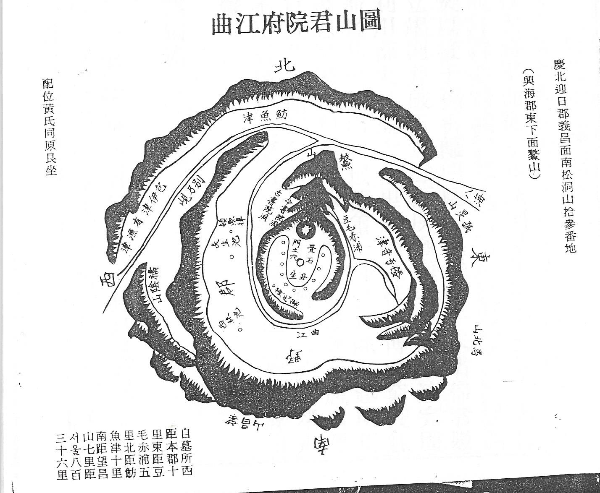

동해바닷가(동해빈, 東海濱) 오산(鰲山)에 정착
삼국사기에도 낙랑 유민 5천이 신라에 망명하였다는 기록이 있으며, 위서 동이지에도 변한의 동쪽에 낙랑의 유민이 이주하였다는 기록이 있습니다.
곡강리의 뒷산인 오산에는 우리 시조 공의 묘소가 있습니다.
경주최씨의 시조이신 최치원공께서 12세 어린 나이로 중국에 건너가 빈공과에 급제하고 문장으로 명성을 떨치시고 28세에 귀국할 때에 같은 해에 급제한 중국인 친구 고운(顧雲)이 이런 시를 지어 주며 송별을 아쉬워하였습니다.
『삼국사기』 열전 최치원 예문지(藝文志)에 “최치원의 46집1권, 계원필경(桂苑筆耕) 20권"에 있는 최치원공에 관한 시입니다.
( )안에 이해를 돕기 위하여 사족을 달았습니다.
내 듣건대 바다 위에 세 쌍의 황금 자라(鳌)
金鼇頭戴山高高
황금자라 머리 위에 높고 높은 산
山之上兮珠宮貝闕黃金殿
산 위에는 주궁패궐 황금전이요
山之下兮千里萬里之洪濤
산 아래엔 천리만리 드넓은 바다라네
傍邊一點鷄林碧
그 옆에 푸른 한점 계림이 있는데
(계림은 신라를 뜻합니다)
鼇山孕秀生奇特
오산 빼어난 기운이 기걸한 인물을 내었나니
(대단한 인물인 최치원이 오산에서 태어났다)
十二乘船渡海來
12세에 배타고 바다를 건너와서
文章感動中華國
문장으로 중화국을 뒤흔들다가
十八橫行戰詞苑
십팔 세에 횡행하며 사원에서 힘 겨루어
一箭射破金門策
단번(화살한발)에 금문의 과거에 급제하였다네.
(18살에 중국에서 과거시험에 합격했습니다)
(주)동해 바다에 있는 삼신산(三神山)이 뿌리가 없어서 어디로 흘러갈지 알 수 없자 천제(天帝)가 거대한 황금자라 여섯 마리로 하여금 그 산을 머리로 떠받치게 했다는 신화가 열자 탕문(列子 湯問)에 전합니다.
이 시에는 치원공의 출생지가 동해바닷가(東海濱) 오산(鰲山)이라고 말하고 있습니다. 다시 말하면 최치원공의 관향은 오산(鰲山)입니다. 따라서 최치원공의 전 후계에서 분적한 최씨들은 모두 오산최가(鰲山崔家)에서 분적한 것으로 보아야 할 것입니다.
곡강(曲江)은 경상북도(慶尙北道) 포항시(浦項市) 북구 흥해읍(興海邑) 일대(一帶)의 별칭(別稱)이라고 합니다.
삼한시대(三韓時代)에 다벌국(多伐國)이 있었다고 하며, 신라(新羅) 때에는 퇴화군(退火郡)이라 불렀다가, 757년(신라 경덕왕 16)에 의창군(義昌郡)으로 개칭(改稱)하였고, 신라(新羅) 말기(末期)에는 남북미질부성(南北彌秩夫城) 이라고도 불렸습니다.
930년(고려 태조 13)에 남북미질부성(南北彌秩夫城)을 다시 합(合)하여 흥해군(興海郡)으로 고쳤고, 1018년(현종 9)에 경주부(慶州府)에 속(屬)하였다가, 1172년(명종 2) 감무(監務)를 두었습니다. 1367년(공민왕 16)에 지군사(知郡事)로 승격(昇格)하였고 곡강(曲江)·오산(鰲山)이라는 별호(別號)가 있었다고 합니다. 조선시대(朝鮮時代)에도 흥해군(興海郡)으로 유지(有志)되었습니다. 그러면 별칭이 된 이유가 있어야 합니다.

우리 족보에 그려진 시조공 묘소 산도를 보면 곡강은 두모적포(豆毛赤浦)에서 발원하여 오산을 가운데 두고 감돌아 신광천과 합해져 동해바다(八海)로 빠져나가는 형세입니다.
문창후 최치원 공께서 12살의 어린 나이로 당나라로 유학을 떠나 공부한 곳은 서안(시안)이며, 그 서안에는 유명한 관광지가 있으니 당 현종이 양귀비를 위하여 축제한 곡강지(曲江池)입니다.
곡강지는 저수지이지만 곡강지라고 부르지 않고 그냥 곡강이라 부르며 그 경치가 아름답기가 이루 형용할 수 없다고 합니다. 또한 과거에 급제한 선비들을 모아놓고 연회를 베풀었던 곳으로도 유명합니다.
18살의 어린 나이에 장원으로 급제한 문창후의 곡강에 대한 감회는 남보다 더했을 것입니다.
성장기를 그곳에서 보내고 과거에 장원을 한 축하연이 바로 그 곡강에서 벌어지니 자기의 본향 오산을 휘 감돌고 동해로 흘러 들어가는 곡강천의 모습은 너무나 그리웠을 것입니다.
서안의 곡강지도 언덕을 가운데 두고 반원형으로 축조되었으니 곡강과 너무나 흡사합니다.
이로 인하여 곡강이란 이름을 얻었는지는 알 수 없으나 고향을 곡강이라 하지 않고 오산이라 한 것은 문창후께서 유학을 떠나기 전에는 곡강이란 지명이 사용되지 않았을 것이라 여겨집니다.
우리의 시조묘가 있는 오산(鰲山)은 흥해 남송리와 곡강리에 걸쳐있는 서원산(116m), 구곡산(118m), 방목산(138m)을 모두 합쳐 오산이라 합니다.
시조의 묘소가 있는 곳이니 더 설명할 여지가 없습니다.
시조 묘가 있는 곳은 자라의 머리에 해당합니다. 자라와 비슷한 거북과 가장 큰 차이점은 자라는 목이 길게 나와 있고 거북은 목이 짧으며 몸통 속으로 머리를 감출 수 있다는 것입니다.
서원산, 구곡산, 방목산은 높이가 높지도 않은데 봉우리(峯)라 하지 않고 모두 산(山)이라고 합니다. 동해 바닷가에 그 산이 셋이니 영락없는 삼신산(三神山)입니다.

주1) 최리의 낙랑국은 한사군의 낙랑군과는 다르고, 우리 최가의 시조로 여겨지며 초대왕이 최숭으로 고구려 대무신왕에 의해 멸망할 때까지 약 200여년을 이어왔다고 환단고기에 전하고 있으며, 북한 사학자들도 이에 동조하고 있지만 남한에서는 인정되지 못하고 있습니다.